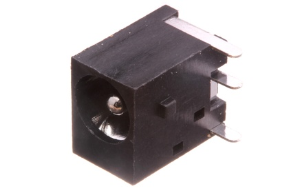
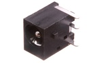
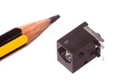

2.1 mm Through Hole DC Jack - DJ2Z

Summary
Name: 2.1 mm Through Hole DC Jack
ID: DCJP-21D-X-THTH-02
Hex ID: DJ2Z
WebPage: https://github.com/oomlout/oomlout-OOMP/wiki/DCJP-21D-X-THTH-02
Short URL: http://oom.lt/DJ2Z
Revision History: https://github.com/oomlout/oomlout-OOMP/blob/master/parts/DCJP-21D-X-THTH-02/
| Type |
Size |
Color |
Description |
Index |
DCJP
DC Jack |
21D
2.1 mm |
X
|
THTH
Through Hole |
02
|
Images


About
This part is awaiting a description.
Specifications
| Info |
Value |
| Type |
DC Jack |
| Size |
2.1 mm |
| Description |
Through Hole |
Extra Details
Spotted a mistake, want to add more? Let us know oomp@oomlout.com
All images and resources are licensed [CC BY-SA] unless otherwise stated (ie. the datasheets)